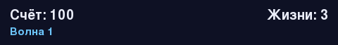

Глава 21 · Проект: космический шутер
Счёт и информация на экране
Текст в Pygame рисуется в два шага: сначала render(), потом blit() на экран.
Счёт выводится готовым шрифтом Pygame (pygame.font, раздел
21.1) — в отличие от Turtle, здесь текст сначала «отрисовывается» в отдельное изображение
(render()), а затем накладывается на экран
(blit()):
tablo_scheta.py
schet = 0
# в отрисовке кадра:
tablo = shrift.render(f"Счёт: {schet}", True, (255, 255, 255))
screen.blit(tablo, (10, 10))render() + blit() — тот же принцип, что write() у Turtle
render(текст, сглаживание, цвет) создаёт изображение текста; screen.blit(изображение, позиция) накладывает его на экран — концептуально то же самое, что artist.write() у Turtle из главы 7, просто в два явных шага вместо одного.
Практика: включает вывод счёта
Pygame открывает нативное окно Python — выполните локально в VS Code, PyCharm или Jupyter
Практика выполняется локально